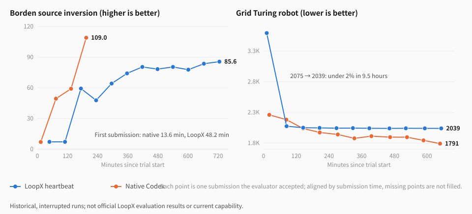
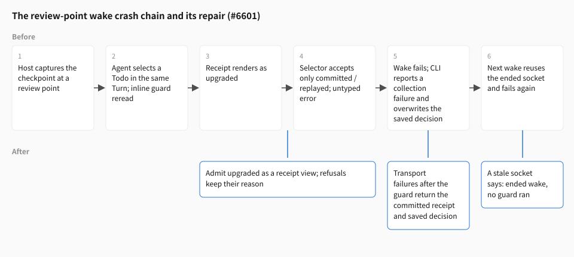

songoow · October 16, 2026 · Interim research note · Evidence cutoff 03:10 UTC
Why the agent stood still after 24 hours
One repair round for LoopX long runs: four failure classes, who owns them, and what remains unproven
The previous article recorded interim progress on Portfolio and Lean. This round put the same system on a longer clock: 24-hour paired runs against native Codex, plus 90-minute LHTB tasks to test whether goals close too early. The results are not flattering, but they are clear. The LoopX agent kept working while its score did not move; the native control changed methods three times in the same window.
This article explains what happened behind those curves. Each of four failure classes has a locatable cause: the first external feedback arrived too late; every review point crashed a wake; review was allowed to “retain the path”, so ten hours went into tuning one solver; and on LHTB the goal declared itself done while the hidden score was far from passing. We label every repair as a product change or a harness change—that distinction decides what a rerun can prove.
Our reading: this round mostly exposed product problems, not model problems. Native Codex reached better scores with the same model. Some repairs are complete and verified against the real CLI; others are only directions. The text keeps them apart.
1. What this round asks
The last round concluded that the system as a whole had become more effective, but that contributions were not yet separated. This round switched to two task families to approach a sharper question: when a task has a real external evaluator and the budget is long, does LoopX’s control plane make the agent use that time better, or merely keep it awake?
| Task | Score direction | Comparison | Budget | Status |
|---|---|---|---|---|
| EdgeBench Borden source inversion | higher is better | LoopX heartbeat (planned entry) vs native Codex | 24 h, native feedback, 1 h submission cooldown | Two pairs; first interrupted at 12.4 h, second paused at 3 h |
| EdgeBench Grid Turing robot | lower is better | same | 24 h, same | Paused at 11.7 h |
| EdgeBench Borden / codec / rust / jagua | higher is better in this group | Combined LoopX candidate, native official, native-goal | 90 min local, 15 min cooldown | 13 scored runs: 11 normal finals, 2 runner failures; another 2 unscored startup failures |
| LHTB four tasks (covshift and others) | hidden-set reward 0–1 | LoopX heartbeat, single arm, against a historical five-arm study | 90 min | Four pilots finished; covshift rerun with the acceptance gate finished |
EdgeBench used gpt-6.1-sol / xhigh; both arms share the model, image and evaluator. LHTB used gpt-5.6-sol / max. “Native feedback” means the agent may submit and receive a public score, with no further submission during the cooldown. The original Borden and second Grid LoopX arms enabled checkpoint capture. The second Borden pair and local combined candidates disabled checkpoints but explicitly enabled TurnEnvelope. These treatments are not one default configuration; section 7 separates them.
Several runs did not finish. Two causes: our own experiment controller failed (a container-count guard was tripped by another cohort’s transient judge container; the controller crashed reading a container that was exiting), and we deliberately paused everything while writing this article, to repair before rerunning. Interrupted runs remain evidence—the curves had already made their point—but they are not terminal scores.
2. What the score curves show

Three phenomena appear on both tasks, independently of each other.
The first external feedback arrives late. On Borden, native Codex had its first score at 13.6 minutes; LoopX at 48.2. On Grid it was 21 versus 12 minutes, but LoopX’s first submission was a 3593 placeholder. In a task that accepts one submission per hour, 35 minutes late shifts the whole curve right by half a cooldown.
The curve flattens on a local solution. On Grid, LoopX reached 2075 at 85 minutes—better than native’s 2182 at the time—then spent 9.5 hours and nine submissions going from 2075 to 2039, under 2%. Native went from 2182 to 1791 in the same window and changed method three times: an embedded C++ accelerator, a dynamic-programming repair step, a sweep over cost parameters. On Borden, from its third submission LoopX changed little but one amplitude constant, gaining about two points per hour.
Submissions sometimes regress. In the first Borden pair, 3 of LoopX’s 11 valid submissions regressed; in the second pair it fell from 68.1 to 41.7, and the evaluator report shows why: the public error improved while the hidden-well error rose from 0.09 to 0.74—it was fitting the public data. Native regressed too (54.7 to 50.3), so this is not specific to LoopX, but every regression costs a cooldown slot.
Native’s 109 on Borden needs its own note. The evaluator report returns aggregate metrics for the hidden set, and both the native arm and the fixed LoopX build in local short runs reached 109 by fitting those metrics. That is a protocol leak, not modelling skill; we record it as a task issue and count it as capability evidence for neither side.
Local supplement: earlier submission did not yield a win across tasks
The local report covers four tasks, 13 scored runs and 71 native submissions. They shared a four-CPU, 16-GiB host; resource ceilings were not exclusive reservations. The chart below starts each arm at its first native-session record, places each submission at submitted_at, and plots the best score through that submission. Lines only connect observations and end at the last submission; there is no fitted function, confidence band or invented zero.

| Task / comparison | Combined LoopX best | Native official best | Native-goal best |
|---|---|---|---|
| Borden | 109.000‡ | 69.579 | Not run |
| Integer compression codec | 24.714 | 28.620 | 12.836 |
| Rust multicrate reconstruction | 26.506 | 26.597 | 26.597* |
| Jagua, first comparison | 22.655 | 28.555 | 32.464* |
| Jagua, repeat comparison | 7.743 | 26.532 | Not run |
* Native-goal Rust and Jagua retain valid scores, but their final Goal turns timed out and no normal final_result was produced. Codec native-goal self-completed at about minute 38; two other codec startup failures produced no score and are not zeros. ‡ The Borden 109 protocol limitation is explained above.
Using the explicit native-first-record clock here, combined LoopX first submits at about 1.7–3.0 minutes, versus official’s 2.8–9.7. Earlier submission did not ensure a higher final best: codec and both Jagua comparisons trailed, while Rust was close. Candidate/official uncached-input token ratios were about 1.06 on Borden, 1.31 on codec, 1.01 on Rust and 1.67 / 1.57 on Jagua. These runs did not show lower uncached input either; those ratios cannot be converted directly into total billed savings.
Second Borden pair: retain the early lead and the interruption

12bb5c931; checkpoints disabled, TurnEnvelope explicitly enabled. Time starts at this cohort’s controller start, unlike the local clock. Each arm has three submissions; the last scores are 41.714 and 50.347, while the plotted best-so-far scores remain 68.108 and 54.705.The controller crashed during container resource sampling; the solver processes were later stopped, leaving no normal final results. A stale status file still said running, which did not establish continued execution. The retained best scores are neither completed 24-hour results nor evidence that checkpoint recovery was repaired.
Related public reports and chart data
The frozen feedback-first observations and runner-correction report provides local outcomes, failure categories, token accounting and repair boundaries. Its remote table retains an earlier window; it does not supersede this article’s later interruption observations. The covshift acceptance-gate rerun supports the 0.82 result in section 6 and belongs to a different benchmark.
Download this section’s curve data as CSV: 71 local and 6 second-pair Borden scalar observations, retaining individual score, best-so-far score, clock origin and closeout category. This is plotting data, not task material, solutions, full trajectories or hidden evaluator details, and is insufficient to independently reproduce the complete experiments.
3. Late feedback: planning put the submission in the third wake
The cause reads directly from the session trace and wake receipts. The planned entry has LoopX plan first, and the planner’s default profile is meant for open-ended product directions: it decomposed a bounded task with an explicit evaluator into three sequential Todos—P0 forward model, P0 inversion, P1 “once a runnable candidate exists, iterate via native evaluation”. Each execute wake finished exactly one Todo and then spent one to one-and-a-half minutes on settlement (complete the Todo, claim the next, write back vision, record quota). Submission therefore landed in wake three.
This is not a control-plane overhead problem. Planning itself took about 1.3 minutes and settlements a few minutes in total; the real 35-minute gap is Todo order. Putting evaluator feedback after “first get the model right”, in a task where the evaluator can tell you the direction immediately, is the wrong prior.
The experimental planning constraint in #6584 put an accepted evaluation before extended local calibration. It was withdrawn in merged #6612: the current runner no longer offers --feedback-first or its planning environment switch. The submission times below describe the historical combined revisions, not a recommended activation or a validated current repair. Across the four local tasks, combined candidates first submitted at about 1.7–3.0 minutes versus official’s 2.8–9.7, using section 2’s clock. The original Borden long-run observation of about 48 minutes used different source, cooldown and operating conditions; it is not a matched “48 minutes down to 2” improvement.
The historical mechanism was a planning input on the benchmark runner’s side, not a product capability gain. It was off by default and changed work order rather than budget, submission rights or decision rules. The trace locates a delay in Todo order; the combined comparisons do not establish an isolated gain. The product question remains how shared planning balances first-deliverable quality with useful feedback; section 5 discusses the separate problem of continuing on a stalled path.
The maintainer requested withdrawal because feedback-first guidance can encourage a lower initial-quality starting point. Earlier feedback alone does not establish a better first deliverable: quality, latency and full cost need separate comparison. Submitting a competitive first candidate and a minimal one may lead later work in different directions; the historical combined runs do not isolate that effect. The original Grid trace shows prolonged iteration around a weak start, but that run did not enable the new feedback-first option. It cannot establish a side effect of that option. A matched rerun needs to test this hypothesis.
4. Review-point crashes: one status word was not accepted
All 4 review points on Grid crashed; in the first Borden pair 24 of 87 wakes failed, 8 with EffectRuntimeInternalError and 16 with ValueError. The local combined candidates did not enable checkpoint handoff and did not show this review/capture failure chain; that does not erase the two local native-goal runner timeouts or two startup failures. The direct cost of the failures was only some twenty minutes of native time, but every failure broke settlement and pushed later wakes into “recover first, then review”—review became a by-product of recovery.

The root cause is a status word that was not accepted. After the Host captures the checkpoint at a review point, the agent selects a Todo in the same Turn; that selection rereads the guard inside the CLI, and the receipt renders as upgraded—a legitimate view of the same durable receipt, meaning the selection appended its binding. The checkpoint selector accepted only committed and replayed, threw an untyped error, the Host surfaced it as an internal error, and the wake ended.
The CLI side amplified the damage. The refused handoff fell into the outer guard’s catch-all and was reported as quota_unexpected_collection_error—“collection failed”—and the saved decision file was overwritten. The native session the next wake resumed still remembered the previous Turn’s handoff socket, which had been deleted with that wake; so first quota validation failed, then a capture-root ValueError. Every failed wake on both tasks follows this one chain.
The repair is #6601, all product code: the selector admits upgraded and refuses with typed errors that keep their reason; a capture or handoff failure after the guard becomes a new typed result, quota_decision_transport_failed, returned together with the committed receipt and the saved decision path, no longer overwriting it; a stale socket reports plainly that it belonged to an ended wake and that no guard ran; failure reports keep the error class and a bounded message—wake receipts had kept only the exception class name, which is why this took two tasks to locate. Seven new tests fail before the fix and pass after; the default path (no capture, no handoff) is unchanged.
Not repaired: a resumed session can still remember an old socket, though it now gets a clear error before any guard runs; the wake after a crashed review does not re-enter review mode. Both point at the same larger design question—a new socket per wake as the transport—which section 7 returns to.
5. In-place tuning: review may retain the path, and it kept retaining
What most needs explaining on Grid is not the crashes but the 9.5 hours between them. From Todo state, review records and tool calls we read three things.
All four reviews chose “retain”. Periodic review fires every 6 settled Turns; the guidance says “a due review can retain the path; it does not force a pivot”; the novelty check requires one new hypothesis. So “push the runtime cap a little further under 28 seconds” counted as a new hypothesis, and all four reviews passed. Native’s score fell from 2182 to 1878 in the same window; every LoopX review could see that gap, and no rule asked it to do anything about it.
One catch-all Todo owned ten hours. The third Todo planning produced was “submit … and continue useful local refinement”. It never closed, its lease was renewed 12 times, and no Todo was ever added. The Todo list carried no strategy: no hypothesis families, no exit criteria, no “if three submissions do not improve, change method”.
Control-plane overhead took about a quarter of the time. 188 LoopX CLI calls plus roughly 345 reads of guard packets and decision files came to about 2.8 of 11.7 hours; 207M input tokens against native’s 146M; 20 context compactions against 7. Native had almost none of this.
Why not simply add “a stalled score forces a pivot”
It is the most direct fix, and the first we thought of. But LoopX’s core has no numeric progress signal today. The only “progress” it knows is a classification the agent declares itself—advanced, unchanged, blocked—and the Grid agent declared advanced every round; 2041, 2040, 2039 genuinely looked like progress to it. More importantly, the accepted design explicitly forbids generic core logic from deriving a pivot from a score slope or a failure count: what a metric means is decided by the provider that produced it, not guessed by the control plane. The rule has a reason—“one fewer sorry” on Lean and “two more points” on Borden are not the same kind of progress—and we will not overturn it for one task.
The design already reserves a slot for this: external progress review. An independent observer writes typed “drift” receipts after each work transition; in assist mode a streak of consecutive drift receipts escalates into the existing replan obligation, and answering that obligation may not restate an old hypothesis or merely rename things—it must carry new evidence. It is off by default, and the only observer today judges code changes, not evaluator scores. It also has a product defect: when attribution is missing (no agent id, or no typed progress record in the window), assist silently never fires while status looks healthy.
So the repair direction is three product changes, none implemented yet: let a provider write a “metric plateau” drift signal, with direction, threshold and the stall judgement owned by the provider while the core only consumes it through the existing obligation chain; make the reason assist cannot fire visible in status; and have the planning contract reject open-ended Todos like “keep optimising”—iterative work must carry exit criteria, and the next round enters through replan. Even with all three, the agent could still answer the obligation with a “new” tuning hypothesis. What they guarantee is that ten hours of in-place tuning can no longer pass unnoticed; they do not guarantee a genuinely different method.
6. Early closure: the acceptance gate changed what counts as done
LHTB’s four pilot tasks showed one pattern. In all four runs LoopX’s scheduler emitted stop_until_explicit_resume between minutes 43 and 60 of a 90-minute budget, with the identical reason: “validated closure evidence derives no-follow-up and confirms no remaining frontier”. Hidden-set rewards at that point were 0.000, 0.028, 0.086 and 0.093. Only the outer continue-until-timeout mechanism brought the agent back; the second phase never stopped on its own.
This shares a root with the Portfolio no_followup failure in the previous article: all Todos being complete does not mean the original goal is met. The difference is that a hidden evaluator now tells us plainly that the evidence the agent used to decide “done” was worth nothing. On two tasks the agent’s CLI exited non-zero on the hidden wrapper manifest; on one it passed hidden schema checks and scored zero on an end-to-end stress group weighted 0.89—it had never checked its deliverable through the verification interface the task description names.
We did not change the scheduler rule; we changed where closure evidence comes from. #6585 adds the explicit opt-in LOOPX_ACCEPTANCE_CONTRACT=planned: during planning the model also writes a Goal acceptance document—which Todos deliver the result, which executable criteria each is bound to, criteria that must exercise the deliverable through the task’s stated verification interface—and the benchmark host, acting as the trusted local owner, configures it through the existing goal-acceptance contract. Selected Todos then cannot complete until their criteria pass, and the goal cannot close while they stay open.
| covshift | Pilot (default) | With acceptance gate (one run) | Five-arm study heartbeat |
|---|---|---|---|
| Hidden-set reward | 0.000 | 0.82 | 0.743 |
| Self-stop | minute 55 | minute 38, but only after all three criteria passed | — |
| Cost | $15.8 | $15.3 | — |
Mechanism readback: planning configured 3 criteria bound one-to-one to 3 Todos; the first Todo’s todo complete ran its bound “load the submitted model and call predict on public validation rows” criterion and passed—exactly the failure the pilot hit when its deliverable could not predict in the evaluator sandbox. After the second phase replanned, it wrote a new criterion, and two completion attempts were rejected until the artifact satisfied it.
The nature of this change also needs stating. The acceptance gate is the benchmark runner writing a document on the model’s behalf and calling an existing LoopX capability; LoopX itself still declared completion at minute 38. What changed is what counts as closure evidence—verifier-shaped, owner-locked—not whether the agent may close. 0.82 is one run; whether forced continuation after that point adds reward, this experiment cannot answer. Review also found a real counterexample: re-confirmation reread the model-writable draft, so one Todo edit plus one rewritten criterion let a Todo with a missing artifact complete. The host now replays only the document it accepted and refuses when the owner contract digest moved; the counterexample is in the real-CLI tests.
7. Which numbers cannot be used
One finding, made while writing, forced us to requalify the evidence above.
LoopX has a TurnEnvelope that is off by default: it compresses the tens-of-kilobyte quota decision into an inline view of about 8 KB and writes the rest to a file read by reference. Checkpoint handoff appends --turn-envelope to the guard command whenever a capture directory is passed. The original Borden and second Grid runs therefore enabled the envelope implicitly; the local combined candidates and second Borden pair disabled checkpoints but explicitly enabled the envelope. The local receipts say turn_envelope=true and turn_envelope_source=explicit. None is a clean envelope-off control. Absence of that capture failure chain cannot show that disabling the envelope improved stability.
That in turn makes Grid the first real long-run measurement of the envelope, and the result is not encouraging: the agent read the full capture file about 345 times, 37–57 KB each—the inline part got shorter, the bytes merely moved, with an extra file read and a socket created per wake, the latter being the crash source of section 4. The roughly one-quarter control-plane overhead was measured with the envelope on. On the other hand, an unmerged experimental build relaxed the envelope’s “re-enter the guard after every workspace change” rule and cut CLI calls from 65 to 25 and quota checks from 40 to 8—the re-entry cadence, not packet size, is the lever.
Two conclusions follow. First, handoff and envelope should be decoupled: the quota CLI already has them as two independent switches, and only the heartbeat builder ties them together—a bounded product change. Second, before merging the quota packet and the envelope, run the validation that never happened: checkpoints off, the same task, one pair each with envelope on and off, measuring uncached tokens, packet reads, CLI calls, time share and score. The direction of the merge reads directly from this evidence: the decision text the agent must act on stays inline, full detail is read on demand through a stable CLI readback, and re-entry cadence becomes an explicit rule. That is design work, not in this round’s code.
Three more kinds of numbers must be set aside. Experiment-controller incidents—a container-count guard tripped by a judge container, a controller crashing on an exiting container—shortened runs but are not LoopX failures. Borden’s 109 comes from an evaluation protocol leak, as section 2 explains. And every “after the fix” local number carries several simultaneous changes: feedback-first, the relaxed re-entry rule, an explicit envelope; none can be attributed alone.
8. How to judge this batch of repairs
As before, we judge by the gap closed and the evidence, not by PR count. This time there is one more column: whether the change lands in the product or the harness. That column decides what a rerun score can prove—a runner-side fix that improves the curve proves that the runner’s input changed the result, not LoopX’s capability.
| Gap | Owner | Shown | Not yet shown |
|---|---|---|---|
| Late first feedback | Harness (experimental planning constraint, now withdrawn) | Traces show Todo order delaying submission; local combined first submissions about 1.7–3.0 min, official 2.8–9.7 min | An isolated causal gain or preserved first-result quality; #6612 removes this option rather than accepting timing alone as success |
| Review-point wake crashes | Product (checkpoint selector, quota CLI) | Root cause reproduced field for field; 7 new tests fail before / pass after; default path unchanged | Readback in a real Docker trial; a stable per-trial transport |
| Ten hours of in-place tuning | Product (review rules, progress review, planning contract) | Mechanism located: review may retain, progress is self-declared, assist fails silently | All repair directions unimplemented; even implemented, a different method is not guaranteed |
| Premature goal closure | Harness calling the product acceptance contract (off by default) | covshift 0.000 → 0.82 once; closure evidence now verifier-shaped; reconfirm counterexample closed | Gain after forced continuation; LoopX’s own closure judgement still fires at minute 38 |
| Checkpoints force the envelope on | Product (heartbeat builder) | Coupling located; both 24-hour runs are therefore not evidence of default behaviour | Decoupling not yet proposed; envelope on/off effect never validated |
What these repairs have in common: each is “the system is working, but the direction of the work was never checked”. The agent did not stop; nobody asked why it was still doing the same thing. The wake was not killed; a legitimate status word was not recognised. The goal was not forgotten; the evidence used to decide “done” had nothing to do with what the evaluator wanted. The value of a long-horizon control plane is not keeping an agent awake for more hours; it is leaving inspectable traces of these “is the direction right” judgements. This round repaired the parts that can be verified item by item; the parts that need the model to choose better are still design.
9. Next: repair the product first, then rerun
At the historical run cutoff, the remote runs were paused and their evidence retained. Since then #6584 and #6601 reached main, while #6612 withdrew feedback-first. The sequence below is the research proposal, not execution authority: new runs need their own authorization, and #6585 remains a branch experiment pending an accepted owner placement.
| Step | Content | Decisive evidence |
|---|---|---|
| Product repairs reach main | #6601 wake crashes; handoff/envelope decoupling; plateau signal and visible failure for progress review; planning contract rejecting open-ended Todos | Real CLI and TypeScript owner tests; the default-off path byte-identical |
| Short pairs first | One 3-hour pair each for Borden and Grid, fixed build vs native, checkpoints off | No crash at review points; review records show a pivot or an evidenced retain |
| Envelope validation | Same task, one pair each with envelope on and off, checkpoints off | Uncached tokens, packet reads, CLI calls, time share, score |
| 24-hour reruns | One pair each for Borden and Grid, envelope state declared explicitly | Common-window comparison with the curves above; failures and interruptions kept |
| Acceptance experiment retained | #6585 branch evidence; mainline placement remains on hold | Accepted owner placement and separately authorized execution before any new run |
The previous article ended by saying progress had moved from “keep the agent running longer” to “make more of the runtime produce valid work”. This round takes that one step further: valid work also needs to be asked about its direction. Native Codex changed methods three times in the same window because it saw the score stall and changed; LoopX saw the same score, and every one of its rules allowed it to continue. Fixing that is the actual goal of this round.